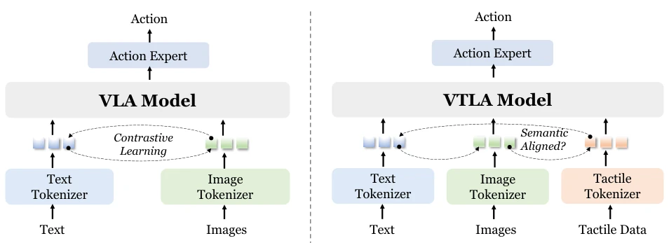
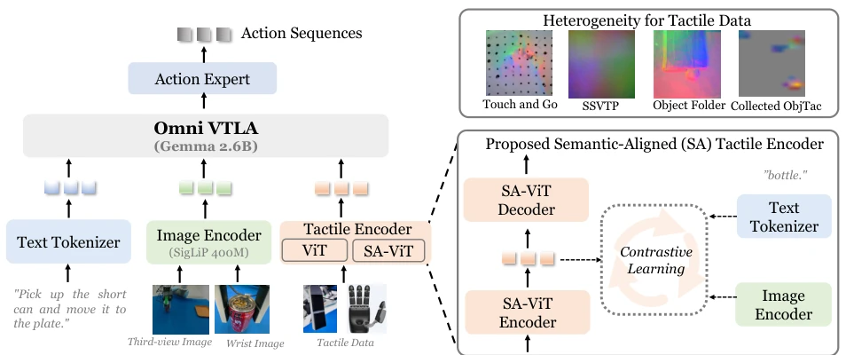
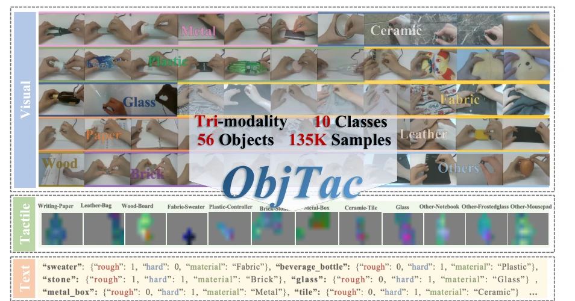
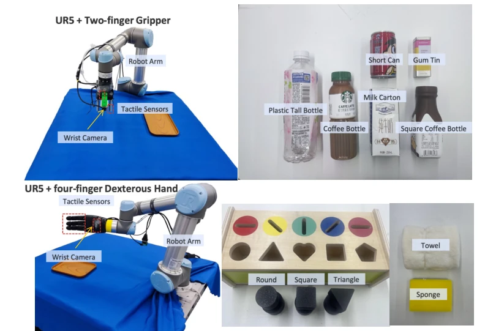
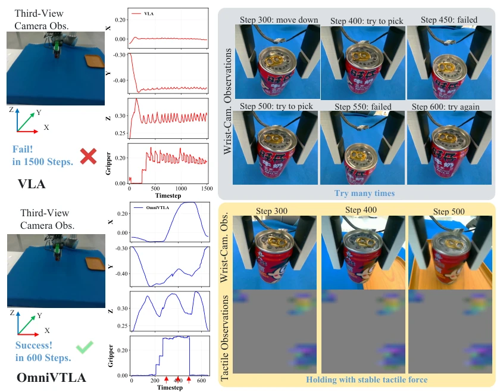
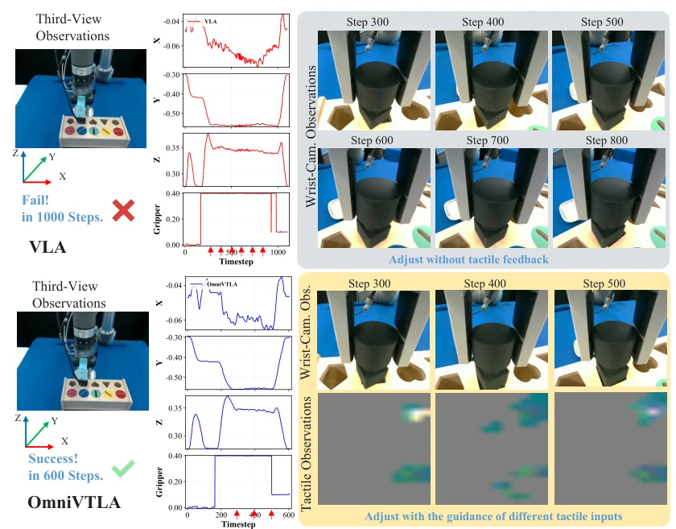
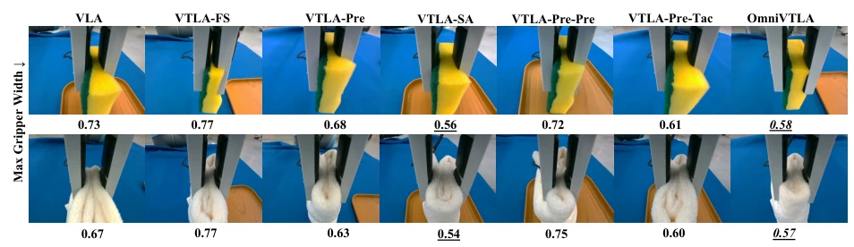
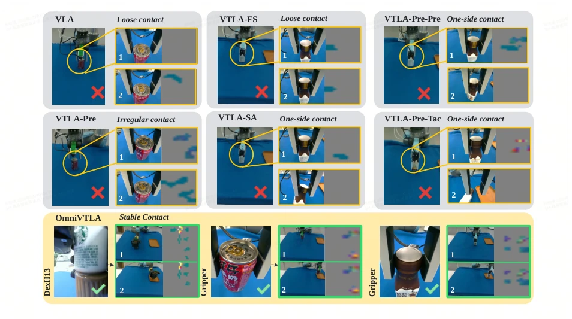
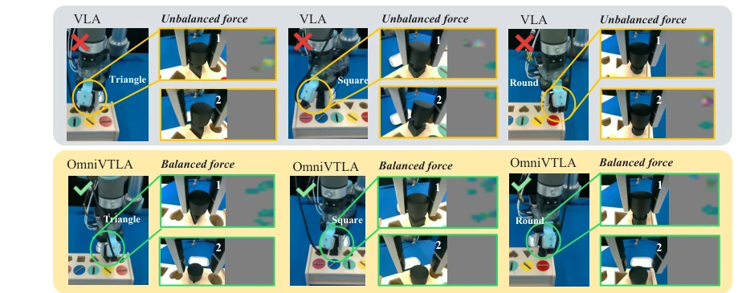
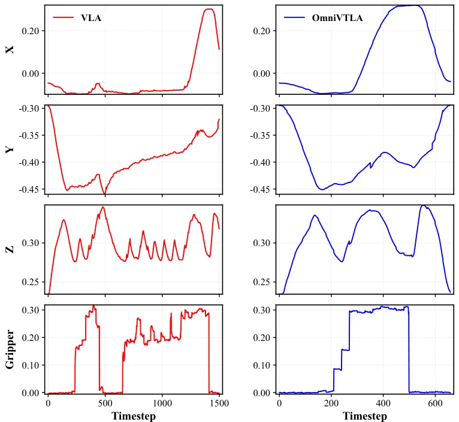

This paper forcefully adds "touch" to VLA models, akin to equipping blind robots with gloves. The core of OmniVTLA lies in "semantic alignment", attempting to align what the robot touches with what it sees and hears. The dual encoder design is quite clever; one inherits visual priors, the other specifically aligns tactile semantics, avoiding the crudeness of directly processing touch as images. Although the ObjTac dataset has only 56 objects, the tri-modal alignment is solid. However, the improvement in success rate is only obvious in high-difficulty tasks like peg-insertion, with limited gains in simple grasping. Moreover, the authors themselves admit it is ineffective in cluttered environments, indicating that touch cannot yet fully replace visual navigation. Overall, it is a pragmatic repair in the VLA field, but still far from true "general tactile intelligence". It proves the necessity of touch in contact tasks, but also exposes the limitations of current multi-modal alignment in complex scenarios.
研究动机Motivation
现有的 Vision-Language-Action (VLA) 模型如 Rt-2 (Brohan et al., 2023b) 和 OpenVLA (Kim et al., 2024a) 虽然泛化性强，但严重依赖视觉和语言，忽略了触觉反馈。在需要精细物理交互的接触丰富任务中，纯视觉模型容易失败。虽然触觉预训练工作如 AnyTouch (Feng et al., 2025) 探索了触觉表征，但多聚焦于理解而非策略学习。近期尝试将触觉融入 VLA 的 VTLA 模型 (Zhang et al., 2025b; Huang et al., 2025) 往往将触觉视为低层信号，未能与视觉和语言进行语义对齐。这导致机器人无法理解“摸起来像什么”与“看到什么”及“指令要求”之间的关联。本文旨在填补触觉预训练与 VLA 之间的鸿沟，通过语义对齐提升接触丰富任务的性能。
Existing Vision-Language-Action (VLA) models such as Rt-2 (Brohan et al., 2023b) and OpenVLA (Kim et al., 2024a), while having strong generalization, heavily rely on vision and language, ignoring tactile feedback. In contact-rich tasks requiring fine physical interaction, pure vision models are prone to failure. Although touch pre-training works like AnyTouch (Feng et al., 2025) explore tactile representations, they mostly focus on understanding rather than policy learning. Recent attempts to integrate touch into VLA, VTLA models (Zhang et al., 2025b; Huang et al., 2025), often treat touch as low-level signals, failing to achieve semantic alignment with vision and language. This leads to robots being unable to understand the correlation between "what it feels like", "what is seen", and "instruction requirements". This paper aims to bridge the gap between touch pre-training and VLA, improving performance in contact-rich tasks through semantic alignment.

Figure 1 Left: The vanilla VLA model, where the image encoder usually inherits a pretrained CLIP/SigLIP backbone trained with contrastive learning to achieve latent-space semantic alignment. Right: VTLA model. Critically, the design of tactile encoders and semantic alignment among vision, language, and touch modalities is rarely studied.
OmniVTLA is based on the π0 (Black et al., 2024) architecture, adopting a dual encoder path to process tactile data. The overall process encodes language instructions, images, and tactile data separately through Tokenizers, inputting them into the Gemma-2.6B backbone network to generate action sequences. The core innovation lies in the design of the touch encoder: the first path uses a pre-trained visual encoder (SigLIP) to inherit visual semantics; the second path is a specially trained semantic alignment touch ViT (SA-ViT). SA-ViT utilizes the ObjTac dataset (56 objects, 135K tri-modal samples) for cross-modal contrastive learning, with the loss function containing alignment terms for vision-language, vision-tactile, and tactile-language. This design solves the heterogeneity problem between tactile data and visual data, enabling tactile signals (such as texture, hardness) to be grounded in visual and language contexts. The action head is trained via flow matching loss, outputting action tokens of different dimensions for different end-effectors. Additionally, to verify encoder effectiveness, the authors conducted strict parameter matching experiments, excluding performance interference caused by parameter count differences, ensuring improvements stem from architectural design rather than scale.

Figure 2 Overview of our proposed OmniVTLA. It integrates dual-ViT encoder for tactile data, to address the inherent heterogeneity between visual and tactile data, as well as across different tactile sensors. The first ViT leverages a pre-trained visual encoder to inherit rich semantic representations from large-scale image data. The second ViT (SA-ViT) is explicitly trained via cross-modal contrastive learning to achieve semantic alignment among tactile, visual, and textual modalities. This dual-encoder design enables effective knowledge transfer and consistent representation learning across diverse sensory inputs.

Figure 3 A snapshot of our collected dataset ObjTac with 56 objects in ten categories. We collect the visual and tactile data pair to achieve semantic-level alignment. We also visualize part of tactile images after the normalization.
Experiments were conducted on a UR5 robotic arm, comparing VLA (π0), Diffusion Policy (Chi et al., 2023), and various VTLA variants. Tasks include Pick-and-place and Peg-insertion. Evaluation metrics cover success rate (SR), completion time (CT), and trajectory smoothness. Results show that OmniVTLA achieved a success rate of 96.9% in grasping tasks (two-finger gripper), an improvement of 21.9% over the baseline; dexterous hand tasks reached 100%. In peg-insertion tasks, it reached 83.3%, outperforming the baseline by 33.3%. Ablation experiments indicate that the SA-ViT encoder with semantic alignment significantly outperforms the non-aligned Tac-ViT and the pre-trained-only visual encoder, proving the effectiveness of tactile semantic alignment. Additionally, trajectories generated by OmniVTLA are smoother, and it can avoid over-deformation in soft object grasping.

Figure 4 Left: Experimental setup of hardware and environment. Right: Objects involved in manipulation tasks.

Figure 6 Stage-by-stage visualization for pick and place task, with two models VLA and OmniVTLA.

Figure 7 Stage-by-stage visualization for peg-insertion task, with two models VLA and OmniVTLA.

Figure 8 Visualization of maximal gripper width for different models, on Towel and Sponge. Underlined font denotes the best result, and italics font denotes the second best result.
其他图片Other Figures

Figure 9 Pick and place visualization of several failed cases due to insufficient contact awareness, loose contact or irregular contact, and our proposed OmniVTLA achieves successful grasping and stable contact owing to full tactile sensing.

Figure 10 Peg insertion visualization of several failed cases for VLA due to unbalanced force, and some success cases of OmniVTLA owing to balanced forces.

Figure 11 Action trajectories of OmniVTLA and VLA, where the first three figures show the spatial motion using the positions (X, Y, Z) and the last figure shows the action of gripper closure.